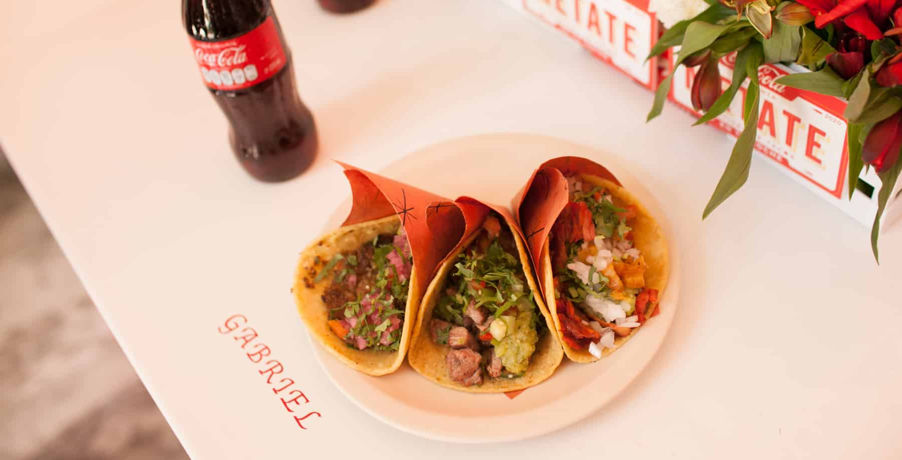
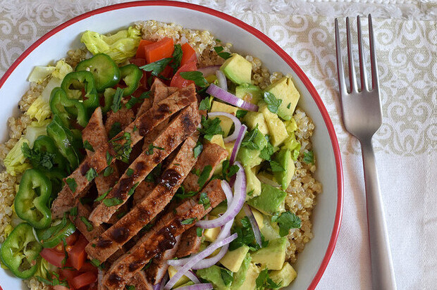

Considero que en el caso de big tikcket el esfuerzo fisico exijido y las complicaciones que demanda entregar la mercancia de gran volumen un programa que apoye la correctaalimentacion de los colaboradores beneficiaria su salud.
El poco tiempo y la operación demandante para cumplir con la ruta de enttega impedi que los colaboradores consuman alimentos saludables, en mi experiencia despues de realizar un volado una amaable pareja nos obsequio unos tacos el cual fue el unico alimento que observe que la tripulación consumio en su jornada ademas del desayuno la hidratación consistio en Cocacolas y aguas algunas compradas por la tripulación y otras tambien obsequidas por los clientes
Diseñar e implantar una comida que se le proporcione de manera gratuita o subsidiaria a la tripulación para disminuir el impacto ecologico se propone la compra de toperes con el logo de liverpool y botellas de agua los toperes deberan ser entregados limpios para brindarles una comida completa que pueda consumirse fria asi como en las botellas una racion de agua
Se pretende brindar una alternativa saludable a la alimentación de la tripulación.
Paqueteria al no representar un esfuerzo fisico no requeririan este programa
Las botellas y toperes podrian ser personales e invitar a la tripulacion que para brindarles el servico deberan proporcionar su toper por la mañana limpio.